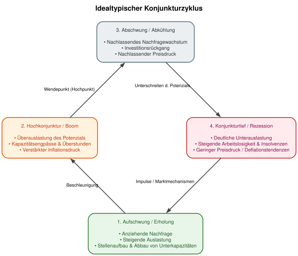
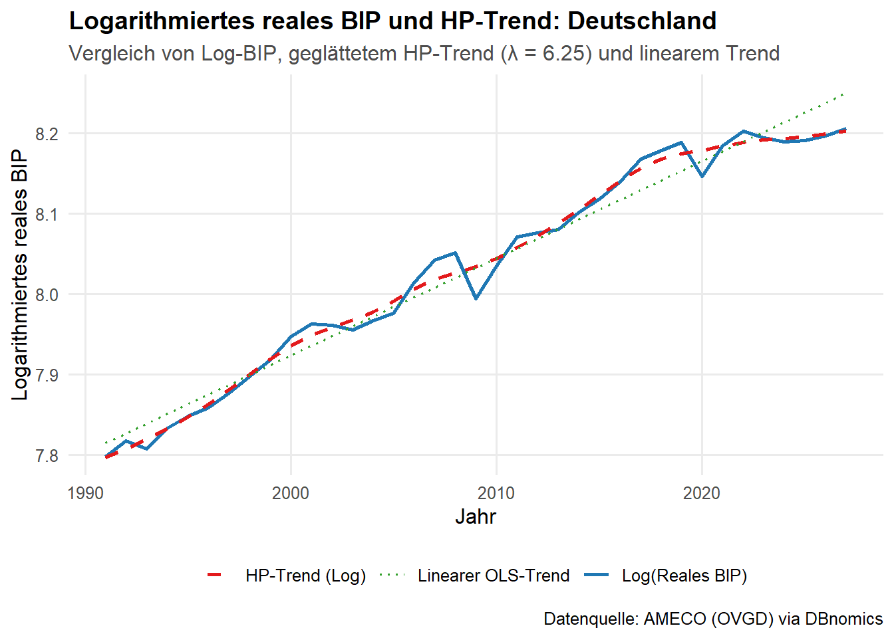
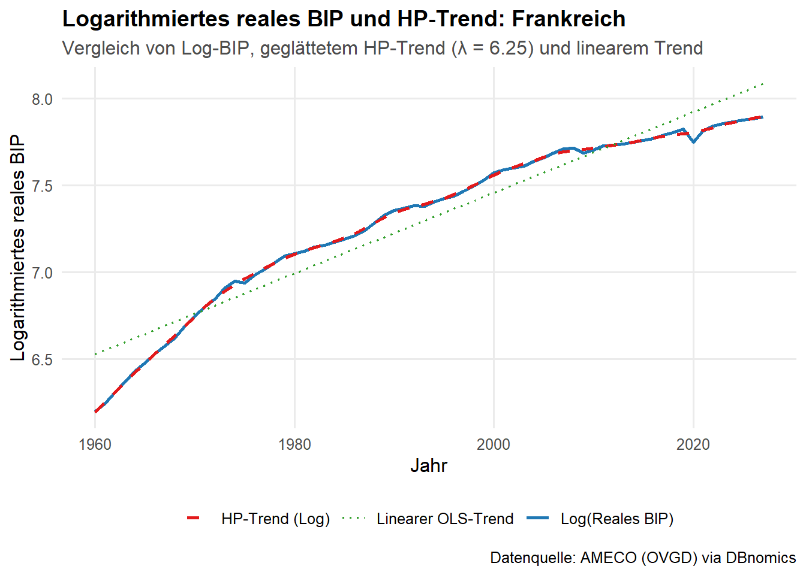
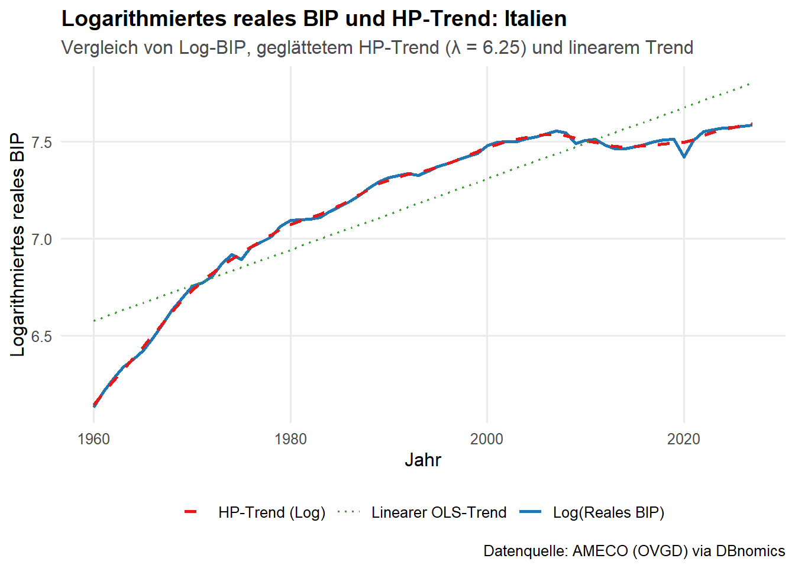
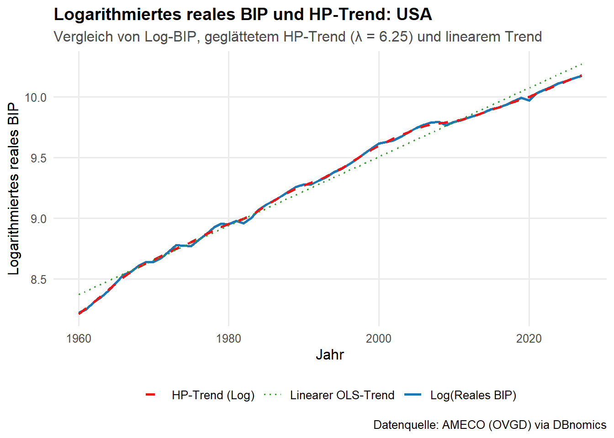
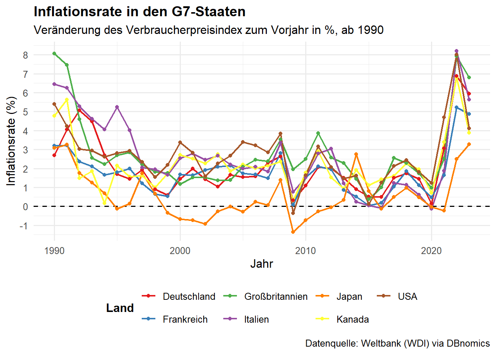

Messung der Wirtschaftsleistung: Quantifizierung von Entstehung, Verteilung und Verwendung des Gesamteinkommens sowie aggregierter Kennzahlen (BIP, BNE, Nettonationaleinkommen).
Wirtschaftspolitische Entscheidungsgrundlage: Datengrundlage für die Ausgestaltung von Finanzpolitik (Haushaltsplanung, Schuldenbremse), Geldpolitik (EZB) sowie Lohn- und Arbeitsmarktpolitik.
Konjunktur- und Strukturdiagnose: Früherkennung von Auf- und Abschwüngen sowie Erfassung des strukturellen Wandels (z. B. Verteilung zwischen Industrie- und Dienstleistungssektor, Entwicklung der Staatsquote).
Basis für Prognosen und makroökonomische Forschung: Empirisches Fundament für ökonometrische Modelle, Input-Output-Analysen und Konjunkturprognosen (z. B. Sachverständigenrat, Wirtschaftsforschungsinstitute).
Internationale Vergleichbarkeit: Standardisierte Regelwerke (ESVG 2010 / SNA) ermöglichen den systematischen Vergleich von Wirtschaftsstruktur und Pro-Kopf-Einkommen zwischen Staaten.
Rechtliche und administrative Bemessungsfunktion:
Berechnung der BNE-basierten EU-Eigenmittelbeiträge der Mitgliedstaaten.
Überwachung der europäischen Fiskalregeln (Defizit- und Schuldenstandsquote am BIP).
Datengrundlage für amtliche Steuerschätzungen und gesetzliche Anpassungsmechanismen (z. B. Rentenentwicklung).
Verteilungsanalyse: Erfassung der primären und sekundären Einkommensverteilung (Funktionale Verteilung wie Lohn- vs. Gewinnquote sowie verfügbares Einkommen der privaten Haushalte).
3.2 Wichtiges Grundkonzept: Das Bruttoinlandsprodukt
# 2. Direkt in IPython / Jupyter Notebook rendern#display(SVG(filename='konjunkturzyklus.svg'))

Stilisierter Konkunkturverlauf
3.5.2 Probleme des stilisierten Konjunktuverlaufs
Empirische Konjunkturverläufe sind nicht so schön symmetrisch
Was ist der Trend? Er ist nicht (direkt) beobachtbar
Entweder ex ante Potenzialoutput schätzen (hohe Informationsanforderungen) oder
ex post möglichst gute Anpassung an die Beobachtungen finden
einfacher linearer Trend ist aber vermutlich nicht sinnvoll
daher Filter, der sowohl langfristige Entwicklungen als auch Änderungen der langfristigen Entwicklungen berücksichtigt
3.5.3 Der Hodrick-Prescott-Filter
\[HP= min_{T_t} \left( \sum_{t=1}^{N} (Y_t - T_t)^2 + \lambda \sum_{t=2}^{N-1} ((T_{t+1} - T_t) - (T_t - T_{t-1}))^2 \right)\] Die Gleichung hat zwei Komponenten
Anpassungsgüte (\(\sum (Y_t - T_t)^2\)): Der erste Teil der Gleichung bestraft die Abweichung des Trends (\(T_t\)) von der ursprünglichen Zeitreihe (\(Y_t\)). Je größer die Abweichungen, desto größer ist dieser Term. Dies stellt sicher, dass der Trend den Daten “folgt”.
Glättungskomponente (\(\lambda \sum ((T_{t+1} - T_t) - (T_t - T_{t-1}))^2\)): Der zweite Teil bestraft die Veränderung der Wachstumsrate des Trends. Er sorgt dafür, dass der Trend möglichst glatt und nicht “zackig” ist.
Wahl von \(\lambda\): Für Jahresdaten sind Werte wie 6,25 oder 100 üblich.
Code
library(rdbnomics)library(dplyr)library(tidyr)library(ggplot2)library(mFilter)# ------------------------------------------------------------------------------# 0. Konfiguration# ------------------------------------------------------------------------------LAMBDA <-6.25# Ravn & Uhlig (2002) Standard für Jahresdaten# ------------------------------------------------------------------------------# 1. Lookup-Tabelle für G7-Länder & AMECO-Series-Codes# ------------------------------------------------------------------------------g7_df <-tibble(series_code =paste0(c("DEU", "FRA", "ITA", "GBR", "CAN", "JPN", "USA"), ".1.1.0.0.OVGD"),country =factor(c("Deutschland", "Frankreich", "Italien", "Großbritannien", "Kanada", "Japan", "USA"),levels =c("Deutschland", "Frankreich", "Italien", "Großbritannien", "Kanada", "Japan", "USA") ))api_ids <-paste0("AMECO/OVGD/", g7_df$series_code)# ------------------------------------------------------------------------------# 2. Daten via DBnomics abrufen und aufbereiten# ------------------------------------------------------------------------------gdp_data <-rdb(ids = api_ids) %>%filter(!is.na(value)) %>%inner_join(g7_df, by ="series_code") %>%mutate(year =as.numeric(substr(as.character(period), 1, 4))) %>%select(country, year, value) %>%arrange(country, year)# ------------------------------------------------------------------------------# 3. HP-Filter anwenden & Daten im Logarithmus belassen# ------------------------------------------------------------------------------gdp_hp <- gdp_data %>%group_by(country) %>%group_modify(~ { log_y <-log(.x$value) hp <-hpfilter(log_y, freq = LAMBDA, type ="lambda") .x %>%mutate(log_bip = log_y,log_trend =as.numeric(hp$trend),cycle =as.numeric(hp$cycle) *100# Zyklische Komponente in % ) }) %>%ungroup()# -----------------------------------------# ------------------------------------------------------------------------------# 1. Funktion zur Erstellung einzelner Plots für ein bestimmtes Land# ------------------------------------------------------------------------------plot_country_hp <-function(df, target_country) { df %>%filter(country == target_country) %>%ggplot(aes(x = year)) +geom_line(aes(y = log_bip, color ="Log(Reales BIP)"), linewidth =0.9) +geom_line(aes(y = log_trend, color ="HP-Trend (Log)"), linewidth =0.9, linetype ="dashed") +geom_smooth(aes(y = log_bip, color ="Linearer OLS-Trend"), method ="lm", se =FALSE, linetype ="dotted", linewidth =0.7) +scale_color_manual(name =NULL,values =c("Log(Reales BIP)"="#1F78B4","HP-Trend (Log)"="#E31A1C","Linearer OLS-Trend"="#33A02C" ) ) +labs(title =paste("Logarithmiertes reales BIP und HP-Trend:", target_country),subtitle =paste0("Vergleich von Log-BIP, geglättetem HP-Trend (λ = ", LAMBDA, ") und linearem Trend"),x ="Jahr",y ="Logarithmiertes reales BIP",caption ="Datenquelle: AMECO (OVGD) via DBnomics" ) +theme_minimal(base_size =12) +theme(legend.position ="bottom",plot.title =element_text(face ="bold", size =14),plot.subtitle =element_text(color ="gray30"),panel.grid.minor =element_blank() )}# ------------------------------------------------------------------------------# 2. Einzelne Plots aufrufen und in Variablen speichern# ------------------------------------------------------------------------------p_deu <-plot_country_hp(gdp_hp, "Deutschland")p_fra <-plot_country_hp(gdp_hp, "Frankreich")p_ita <-plot_country_hp(gdp_hp, "Italien")p_usa <-plot_country_hp(gdp_hp, "USA")# Einzelnen Plot anzeigen (z. B. Deutschland)p_deu

Code
p_fra

Code
p_ita

Code
p_usa

Der HP Filter und die deutsche Konjuktur
3.6 Entwicklung zentraler makroökonomischer Größen
library(rdbnomics)library(dplyr)library(ggplot2)message("Lade Inflationsraten der G7-Staaten via DBnomics (Weltbank)...")# 1. Länderliste (ISO3-Codes) für G7g7_countries <-c("CAN", "FRA", "DEU", "ITA", "JPN", "GBR", "USA")# 2. Datenabruf über die Weltbank (WB)# FP.CPI.TOTL.ZG = Inflation, consumer prices (annual %)df_inflation <-rdb(provider_code ="WB",dataset_code ="WDI",dimensions =list(country = g7_countries,indicator ="FP.CPI.TOTL.ZG" ))# 3. Ländernamen für die Beschriftungcountry_names <-c("CAN"="Kanada","FRA"="Frankreich","DEU"="Deutschland","ITA"="Italien","JPN"="Japan","GBR"="Großbritannien","USA"="USA")# 4. Daten aufbereiteninflation_clean <- df_inflation %>%mutate(country_code =toupper(country)) %>%mutate(country_label = country_names[country_code]) %>%mutate(year =as.numeric(substr(as.character(period), 1, 4))) %>%# Relevante Spalten auswählen und sauber benennenselect(country = country_label, year, inflation_rate = value) %>%# Unvollständige Daten filternfilter(!is.na(inflation_rate) &!is.na(country)) %>%# Zeitreihe ab 1990 filternfilter(year >=1990)# 5. Zeitreihenplot erstellenggplot(inflation_clean, aes(x = year, y = inflation_rate, color = country)) +# Null-Linie hilft, Deflationsphasen (z.B. in Japan) sofort zu erkennengeom_hline(yintercept =0, linetype ="dashed", color ="black", linewidth =0.6) +geom_line(linewidth =0.8) +geom_point(size =1.5) +scale_color_brewer(palette ="Set1", name ="Land") +# Y-Achse zentriert bei 0 beginnen zu lassen ist bei Inflation schwer, da es negative Werte gibtscale_y_continuous(breaks = scales::pretty_breaks(n =8)) +labs(title ="Inflationsrate in den G7-Staaten",subtitle ="Veränderung des Verbraucherpreisindex zum Vorjahr in %, ab 1990",x ="Jahr",y ="Inflationsrate (%)",caption ="Datenquelle: Weltbank (WDI) via DBnomics" ) +theme_minimal(base_size =12) +theme(plot.title =element_text(face ="bold"),legend.position ="bottom",legend.title =element_text(face ="bold") )

Code
library(knitr)library(kableExtra)
Warning: Paket 'kableExtra' wurde unter R Version 4.3.3 erstellt
Attache Paket: 'kableExtra'
Das folgende Objekt ist maskiert 'package:dplyr':
group_rows
Code
# Data Frame erstellenbip_df <-data.frame(Berechnungsmethode =c("Entstehungsrechnung", "Verwendungsrechnung", "Verteilungsrechnung"),`Blickwinkel / Perspektive`=c("Produktion:\nWo und durch welche Branchen wird der Mehrwert erbracht?","Nachfrage:\nWofür wird die Wirtschaftsleistung verwendet?","Einkommen:\nWie wird der Ertrag auf Arbeit und Kapital verteilt?" ),Berechnungsschema =c("Summe der Bruttowertschöpfung aller Branchen\n+ Gütersteuern abzüglich Gütersubventionen\n= BIP","Private Konsumausgaben (C)\n+ Konsumausgaben des Staates (G)\n+ Bruttoinvestitionen (I)\n+ Außenbeitrag (Exporte X − Importe M)\n= BIP","Arbeitnehmerentgelt\n+ Unternehmens- und Vermögenseinkommen (= Volkseinkommen)\n+ Produktions- und Importabgaben netto\n+ Abschreibungen\n− Saldo der Primäreinkommen aus der übrigen Welt\n= BIP" ),check.names =FALSE)# Variante A: Einfache Markdown/Pipe-Tabelle für Quarto/Rmd (nutzt \n als HTML-Break)kable(bip_df, format ="pipe")
Warning: 'xfun::attr()' ist veraltet.
Benutzen Sie stattdessen 'xfun::attr2()'
Siehe help("Deprecated")
Warning: 'xfun::attr()' ist veraltet.
Benutzen Sie stattdessen 'xfun::attr2()'
Siehe help("Deprecated")
Berechnungsmethode
Blickwinkel / Perspektive
Berechnungsschema
Entstehungsrechnung
Produktion:
Wo und durch welche Branchen wird der Mehrwert erbracht?
Summe der Bruttowertschöpfung aller Branchen
Gütersteuern abzüglich Gütersubventionen = BIP | |Verwendungsrechnung |Nachfrage: Wofür wird die Wirtschaftsleistung verwendet? |Private Konsumausgaben (C)
Konsumausgaben des Staates (G)
Bruttoinvestitionen (I)
Außenbeitrag (Exporte X − Importe M) = BIP | |Verteilungsrechnung |Einkommen: Wie wird der Ertrag auf Arbeit und Kapital verteilt? |Arbeitnehmerentgelt
Unternehmens- und Vermögenseinkommen (= Volkseinkommen)
Produktions- und Importabgaben netto
Abschreibungen − Saldo der Primäreinkommen aus der übrigen Welt = BIP |
Code
# Variante B: Mit kableExtra für HTML-/PDF-Output mit fester Spaltenbreitebip_df %>%kbl(escape =FALSE) %>%kable_styling(full_width =FALSE, bootstrap_options =c("striped", "hover")) %>%column_spec(1, width ="12em", bold =TRUE) %>%column_spec(2, width ="18em") %>%column_spec(3, width ="25em")
Warning: 'xfun::attr()' ist veraltet.
Benutzen Sie stattdessen 'xfun::attr2()'
Siehe help("Deprecated")
Berechnungsmethode
Blickwinkel / Perspektive
Berechnungsschema
Entstehungsrechnung
Produktion: Wo und durch welche Branchen wird der Mehrwert erbracht?
Summe der Bruttowertschöpfung aller Branchen + Gütersteuern abzüglich Gütersubventionen = BIP
Verwendungsrechnung
Nachfrage: Wofür wird die Wirtschaftsleistung verwendet?
Private Konsumausgaben (C) + Konsumausgaben des Staates (G) + Bruttoinvestitionen (I) + Außenbeitrag (Exporte X − Importe M) = BIP
Verteilungsrechnung
Einkommen: Wie wird der Ertrag auf Arbeit und Kapital verteilt?
Arbeitnehmerentgelt + Unternehmens- und Vermögenseinkommen (= Volkseinkommen) + Produktions- und Importabgaben netto + Abschreibungen − Saldo der Primäreinkommen aus der übrigen Welt = BIP